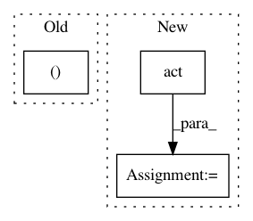

d42df89c351e0c2a031ea3a9ae17fb7b844e7b79,tensorlayer/layers.py,BatchNormLayer,__init__,#BatchNormLayer#Any#Any#Any#Any#Any#Any#Any#Any#,1680
Before Change
else:
is_train = tf.cast(tf.zeros([]), tf.bool)
mean, variance = control_flow_ops.cond(
// is_train, lambda: (mean, variance), // when training, (x-mean(x))/var(x)
is_train, mean_var_with_update,
lambda: (moving_mean, moving_variance)) // when inferencing, (x-0)/1
After Change
self.outputs = act( tf.nn.batch_normalization(self.inputs, mean, var, beta, gamma, epsilon) )
else:
// self.outputs = act( tf.nn.batch_normalization(self.inputs, ema.average(mean), ema.average(variance), beta, gamma, epsilon) ) // Akara
self.outputs = act( tf.nn.batch_normalization(self.inputs, moving_mean, moving_variance, beta, gamma, epsilon) ) // Simiao
// self.outputs = act( tf.nn.batch_normalization(self.inputs, mean, variance, beta, gamma, epsilon) )
// variables = tf.get_collection(TF_GRAPHKEYS_VARIABLES, scope=vs.name) // 8 params in TF12 if zero_debias=True
In pattern: SUPERPATTERN
Frequency: 3
Non-data size: 3
Instances
Project Name: zsdonghao/text-to-image
Commit Name: d42df89c351e0c2a031ea3a9ae17fb7b844e7b79
Time: 2017-01-18
Author: dhsig552@163.com
File Name: tensorlayer/layers.py
Class Name: BatchNormLayer
Method Name: __init__
Project Name: chainer/chainerrl
Commit Name: addee0cba18808235633faabd83b259a8bf8b2a8
Time: 2017-01-15
Author: muupan@gmail.com
File Name: tests/agents_tests/test_a3c.py
Class Name: TestA3C
Method Name: _test_abc
Project Name: reinforceio/tensorforce
Commit Name: 9f2e01982765a5bad4dab4cd622b9c76f348ead5
Time: 2019-06-27
Author: alexkuhnle@t-online.de
File Name: test/unittest_agent.py
Class Name: UnittestAgent
Method Name: test_query